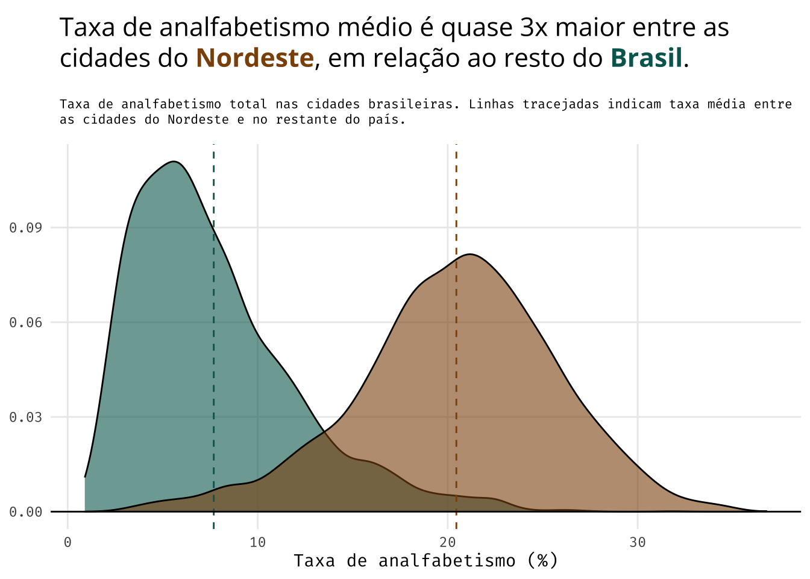

Os dados mais recentes do IBGE revelam um padrão geográfico marcante na taxa de analfabetismo no Brasil. Os municípios do nordeste do país apresentam taxas de analfabetismo quase 3x maiores do que no restante do país. O gender gap na taxa de alfabetização também é maior nas cidades do nordeste.
data-visualization
ggplot2
brazil
maps
Author
Vinicius Oike
Published
May 12, 2024
Code
library(sf)library(dplyr)library(tidyr)library(sidrar)library(ggplot2)library(ggtext)library(showtext)library(patchwork)font_add_google("Fira Mono", "Fira Mono")font_add_google("Open Sans", "Open Sans")showtext_auto()muni = geobr::read_municipality(year =2020, showProgress =FALSE)dim_muni =as_tibble(st_drop_geometry(muni))analf =get_sidra(9543, geo ="City", classific ="c2")tbl_gender = analf |> janitor::clean_names() |>as_tibble() |>filter(sexo !="Total") |>select(code_muni = municipio_codigo, sex = sexo, rate = valor) |>mutate(code_muni =as.numeric(code_muni))analf_gender = tbl_gender |>mutate(sex =factor(sex)) |>pivot_wider(id_cols ="code_muni", names_from ="sex", values_from ="rate") |>rename_with(tolower) |>mutate(gender_gap = homens - mulheres) |>arrange(gender_gap)analf_gender = analf_gender |>left_join(dim_muni) |>mutate(is_nordeste =factor(if_else(code_region ==2, 1L, 0L)) )tbl_analf = analf |> janitor::clean_names() |>as_tibble() |>filter(sexo =="Total") |>select(code_muni = municipio_codigo, rate = valor) |>mutate(code_muni =as.numeric(code_muni))analf_city =left_join(muni, tbl_analf, by ="code_muni")analf_city = analf_city |>mutate(analf_rate =100- rate)breaks_jenks = BAMMtools::getJenksBreaks(analf_city$analf_rate, k =9)[-1]breaks_jenks =ceiling(breaks_jenks)labels =c("<5%", "5-8%", "8-11%", "11-15%", "15-19%", "19-23%", "23-27%", "27-37%")analf_city = analf_city |>mutate(analf_group =factor(findInterval(analf_rate, breaks_jenks, left.open =TRUE)))p1 =ggplot(analf_city) +geom_sf(aes(fill = analf_group, color = analf_group), lwd =0.15) +scale_fill_brewer(name ="",type ="div",direction =-1,labels = labels ) +scale_color_brewer(name ="",type ="div",direction =-1,labels = labels ) +labs(title ="Taxa de Analfabetismo",subtitle ="Taxa de analfabetismo total por município" ) +coord_sf(xlim =c(NA, -35)) + ggthemes::theme_map(base_family ="Open Sans") +theme(legend.position.inside =c(0.1, 0.1),plot.title =element_text(hjust =0.5,size =22,margin =margin(5, 0, 5, 0) ),plot.subtitle =element_text(hjust =0.5,margin =margin(2.5, 0, 0, 0) ),plot.margin =margin(0, 0, 0, 0) )analf_city = analf_city |>mutate(is_nordeste =factor(if_else(code_region ==2, 1L, 0L)))tbl_summary = analf_city |>st_drop_geometry() |>summarise(avg =mean(analf_rate), .by ="is_nordeste")p2 =ggplot() +geom_density(data = analf_city,aes(x = analf_rate, fill = is_nordeste),alpha =0.6 ) +geom_vline(data = tbl_summary,aes(xintercept = avg, color = is_nordeste),lty =2 ) +geom_hline(yintercept =0) +guides(fill ="none", color ="none") +scale_fill_manual(values =c("#01665e", "#8c510a")) +scale_color_manual(values =c("#01665e", "#8c510a")) +labs(title ="Taxa de analfabetismo médio é quase 3x maior entre as cidades do <b><span style='color:#8c510a'>Nordeste</span></b>, em relação ao resto do <b><span style='color:#01665e'>Brasil</span></b>.",subtitle ="Taxa de analfabetismo total nas cidades brasileiras. Linhas tracejadas indicam taxa média entre as cidades do Nordeste e no restante do país.",x ="Taxa de analfabetismo (%)",y =NULL ) +theme_minimal(base_family ="Fira Mono") +theme(panel.grid.minor =element_blank(),plot.title =element_textbox_simple(size =16,padding =margin(5.5, 5.5, 5.5, 5.5),margin =margin(0, 0, 5.5, 0),family ="Open Sans" ),plot.subtitle =element_textbox_simple(size =8,padding =margin(5.5, 5.5, 5.5, 5.5),margin =margin(0, 0, 5.5, 0)) )label_1 ="Em 97,4% das cidades do <b><span style='color:#8c510a'>Nordeste</span></b>, as pessoas do <i>sexo feminino têm taxas de alfabetização menores</i>. Em alguns casos, a diferença supera 10 pontos percentuais."label_2 ="Na maior parte das cidades do <b><span style='color:#01665e'>Brasil</span></b>, não há diferença grande na taxa de alfabetização entre pessoas do sexo masculino e do sexo feminino."text_labels =tibble(x =c(-10, 7.5), y =c(0.2, 0.25), label =c(label_1, label_2))p3 =ggplot() +geom_density(data = analf_gender,aes(x = gender_gap, fill = is_nordeste),alpha =0.7) +geom_textbox(data = text_labels,aes(x, y, label = label),family ="Open Sans",size =3 ) +scale_fill_manual(values =c("#01665e", "#8c510a")) +guides(fill ="none") +labs(title ="Gender gap na alfabetização",subtitle ="Diferença, em pontos percentuais, da taxa de alfabetização entre pessoas do sexo masculino e pessoas do sexo feminino. Valores próximos de zero indicam diferenças pequenas. Valores negativos indicam que mulheres têm taxas de alfabetização menores do que homens.",caption ="Fonte: IBGE (Censo, 2022). @viniciusoike",y =NULL,x ="Gender gap" ) +theme_minimal(base_family ="Fira Mono") +theme(panel.grid.minor =element_blank(),plot.title =element_textbox_simple(size =16,padding =margin(5.5, 5.5, 5.5, 5.5),margin =margin(0, 0, 5.5, 0),family ="Open Sans" ),plot.subtitle =element_textbox_simple(size =8,padding =margin(5.5, 5.5, 5.5, 5.5),margin =margin(0, 0, 5.5, 0)) )panel = p1 | (p2 / p3)panel = panel +plot_layout(widths =c(0.5, 0.5))
Analfabetismo no Brasil
Mapa dos municípios
A taxa média de analfabetismo no Brasil é de 7%, segundo o Censo mais recente do IBGE. Isto é, os municípios em tons mais claros de verde e em tons de marrom estão todos acima da média nacional.
Nordeste
Cidades no Nordeste tem taxas de analfabetismo mais elevadas
Quando se olha especificamente para as cidades nordestinas, verifica-se taxas de analfabetismo consideravelmente elevadas. A taxa média chega a ser quase três vezes maior do que a observada no restante do país.

Discrepâncias entre homens e mulheres é elevada
A disparidade nas taxas de alfabetização também se apresenta quando olha-se os dados relativos a pessoas do sexo masculino e pessoas do sexo feminino. O “gender gap”, diferença entre a taxa de alfabetização entre homens e entre mulheres, também é maior entre cidades do Nordeste do que no restante do país. Vale reforçar que o gráfico abaixo mostra a diferença nas taxas de alfabetização, assim valores negativos, indicam que as taxas de analfabetismo são maiores entre mulheres.